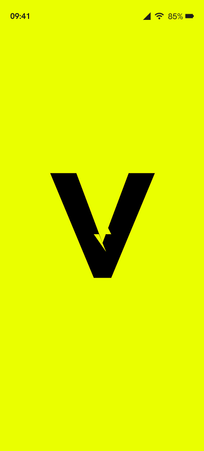
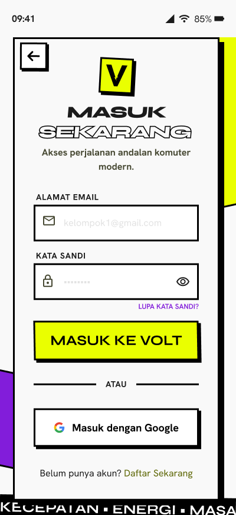
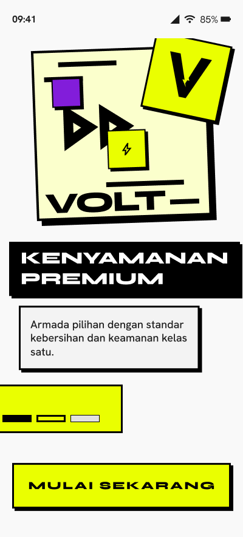
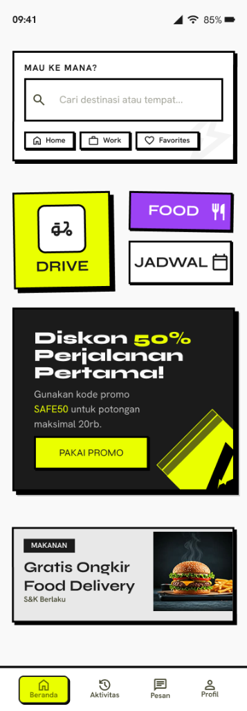
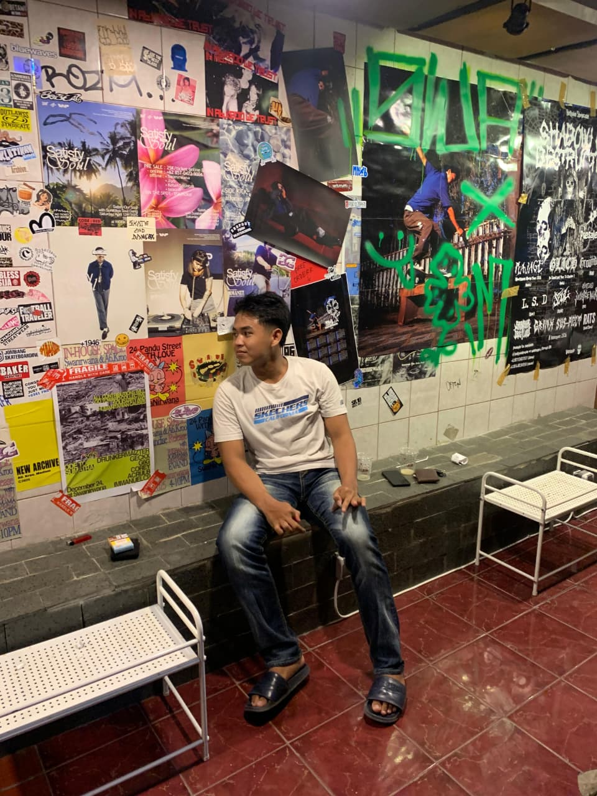
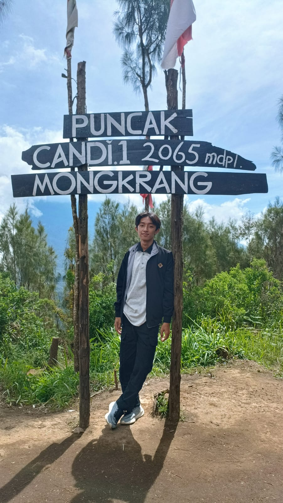

Berawal dari wawancara pengguna yang mengungkap kebutuhan akan rasa aman, kenyamanan, dan perjalanan yang lebih terencana, VOLT hadir dengan fitur Lady Driver, Schedule Ride, Share Location, dan SOS Darurat untuk mendukung mobilitas harian pengguna.



VOLT adalah aplikasi transportasi online yang dirancang untuk menghadirkan pengalaman perjalanan yang lebih aman, nyaman, dan praktis. Berangkat dari hasil wawancara pengguna, VOLT menghadirkan fitur seperti Lady Driver, Schedule Ride, Share Location, dan SOS Darurat untuk mendukung kebutuhan mobilitas harian pengguna.
VOLT merupakan aplikasi transportasi online yang dirancang untuk membantu pengguna memenuhi kebutuhan mobilitas sehari-hari dengan lebih aman, nyaman, dan praktis. Selain menyediakan layanan transportasi, VOLT juga menghadirkan fitur pendukung seperti pemesanan makanan, penjadwalan perjalanan, berbagi lokasi secara real-time, dan fitur keamanan untuk meningkatkan pengalaman pengguna selama perjalanan.
Nama VOLT terinspirasi dari kata Voltage yang merepresentasikan energi, kecepatan, dan mobilitas modern. Filosofi tersebut mencerminkan tujuan aplikasi dalam menghadirkan layanan transportasi yang cepat, aman, dan mudah digunakan oleh berbagai kalangan pengguna.
Berbeda dengan aplikasi transportasi online pada umumnya, VOLT mengadopsi pendekatan visual Neo-Brutalism dengan penggunaan warna kontras, tipografi tegas, serta elemen antarmuka yang berani untuk menciptakan identitas visual yang unik dan mudah dikenali.
Tujuan: VOLT dikembangkan berdasarkan hasil wawancara pengguna yang mengungkap kebutuhan akan pengalaman transportasi yang lebih aman dan nyaman, khususnya bagi pengguna perempuan. Selain itu, pengguna juga menginginkan kemudahan dalam mengatur perjalanan rutin tanpa harus melakukan pemesanan secara berulang setiap hari.
Target Pengguna: Mahasiswa, karyawan, dan pengguna perempuan yang memiliki mobilitas tinggi serta membutuhkan layanan transportasi yang aman, praktis, dan fleksibel dalam aktivitas sehari-hari.
Untuk memahami kebutuhan dan permasalahan pengguna, dilakukan wawancara terhadap 6 responden dengan rentang usia 10–60 tahun yang memiliki pengalaman menggunakan aplikasi transportasi online. Penelitian menggunakan metode Semi-Structured Interview, yaitu wawancara dengan daftar pertanyaan inti yang dapat disesuaikan berdasarkan pengalaman dan karakteristik masing-masing responden.
6 Orang
5 Orang
1 Orang
15–20 Menit / Responden
"Saya sangat membutuhkan fitur driver perempuan karena terkadang merasa kurang nyaman ketika harus berboncengan dengan pengemudi laki-laki yang tidak dikenal."
Berdasarkan insight yang diperoleh dari wawancara pengguna, beberapa permasalahan utama dirumuskan menjadi pertanyaan How Might We untuk membantu mengubah kebutuhan pengguna menjadi peluang desain yang dapat diwujudkan melalui fitur dan solusi dalam aplikasi VOLT.
Setelah mengidentifikasi kebutuhan dan pain point pengguna, langkah selanjutnya adalah merancang user flow untuk memvisualisasikan bagaimana pengguna berinteraksi dengan aplikasi VOLT. User flow ini menjadi dasar dalam menentukan struktur navigasi dan alur penggunaan setiap fitur utama.
Setelah kebutuhan pengguna berhasil diidentifikasi melalui wawancara dan problem statement, dilakukan sesi brainstorming menggunakan metode Crazy Eights untuk menghasilkan berbagai kemungkinan solusi. Tahap ini membantu mengeksplorasi ide fitur, struktur halaman, dan pendekatan desain secara cepat sebelum dipilih solusi yang paling relevan untuk dikembangkan lebih lanjut.
Proses desain diawali dengan pembuatan sketsa tangan untuk mengeksplorasi berbagai ide dan kemungkinan layout secara cepat. Setelah struktur utama ditentukan, sketsa tersebut diterjemahkan ke dalam wireframe low-fidelity untuk menyusun alur navigasi dan penempatan elemen sebelum memasuki tahap desain visual.
Setelah struktur dan alur aplikasi selesai dirancang, tahap berikutnya adalah membangun sistem desain yang konsisten. VOLT mengadopsi gaya visual Neo-Brutalism untuk memastikan setiap layar memiliki identitas yang kuat, mudah dikenali, dan tetap memberikan pengalaman pengguna yang nyaman.
Desain high-fidelity dibuat dengan menggabungkan hasil wawancara pengguna, user flow, wireframe, dan design system yang telah disusun sebelumnya. Pada tahap ini, seluruh ide dan solusi diterjemahkan menjadi antarmuka yang lebih realistis, interaktif, dan siap untuk diuji melalui prototype.

Prototype interaktif VOLT dibuat menggunakan Figma untuk mensimulasikan pengalaman pengguna secara langsung. Seluruh fitur utama dapat dicoba, termasuk pemesanan transportasi, pemesanan makanan, Schedule Ride, Share Location, dan SOS Darurat.
Pengujian dilakukan menggunakan prototype interaktif VOLT untuk mengevaluasi kemudahan penggunaan, efektivitas fitur, serta pengalaman pengguna saat menyelesaikan berbagai tugas utama yang tersedia dalam aplikasi.

| Task | Status | Catatan |
|---|---|---|
| Pemesanan Transportasi | ✓ Berhasil | Proses pemesanan mudah dipahami dan dapat diselesaikan tanpa kendala. |
| Pemesanan Makanan | ✓ Berhasil | Alur pemesanan makanan berjalan dengan lancar dan mudah digunakan. |
| Schedule Ride | ✓ Berhasil | Pengguna dapat menjadwalkan perjalanan dengan mudah sesuai kebutuhan. |
| Share Location | ✓ Berhasil | Fitur mudah ditemukan dan memberikan rasa aman tambahan selama perjalanan. |
| SOS Darurat | ✓ Berhasil | Popup konfirmasi darurat dinilai jelas dan mudah dipahami pengguna. |
Pengguna mengharapkan tersedianya metode pembayaran QRIS sebagai alternatif pembayaran digital.
Menambahkan metode pembayaran QRIS serta menyempurnakan beberapa alur prototype yang belum terhubung secara penuh.
Menambahkan metode pembayaran QRIS sebagai alternatif pembayaran digital agar pengguna memiliki lebih banyak pilihan saat melakukan transaksi.
Prototype VOLT berhasil membantu pengguna menyelesaikan seluruh task utama yang diberikan, mulai dari pemesanan transportasi, pemesanan makanan, penjadwalan perjalanan, Share Location, hingga SOS Darurat. Pengguna menilai alur penggunaan cukup jelas, mudah dipahami, dan memiliki desain yang konsisten. Temuan utama dari pengujian ini adalah kebutuhan akan metode pembayaran QRIS serta penyempurnaan beberapa alur prototype untuk meningkatkan pengalaman pengguna pada pengembangan selanjutnya.

Mahasiswa Teknologi Informasi | UI/UX Designer, Cybersecurity & Tech Enthusiast
Saya adalah mahasiswa D3 Teknologi Informasi di Politeknik Negeri Madiun yang memiliki ketertarikan pada UI/UX Design dan cybersecurity. Saya percaya bahwa produk digital yang baik tidak hanya harus memiliki tampilan yang menarik, tetapi juga mampu memberikan pengalaman yang mudah, nyaman, dan bermanfaat bagi penggunanya.
Tech Stack & Keahlian
Saat tidak sedang menulis kode atau mengerjakan tugas kuliah, biasanya saya:
Perlengkapan utama yang saya gunakan sehari-hari untuk ngoding dan kuliah:
Tertarik untuk berdiskusi mengenai UI/UX Design, pengembangan web, cybersecurity, atau proyek teknologi lainnya? Saya selalu terbuka untuk bertukar ide, belajar hal baru, dan berkolaborasi dalam menciptakan solusi digital yang bermanfaat.